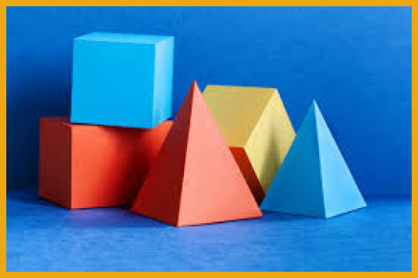
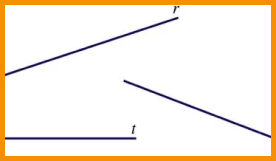
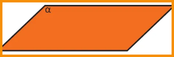

GEOMETRIA ESPACIAL
A Geometria Espacial corresponde a área da matemática que se encarrega de estudar as figuras no espaço, ou seja, aquelas que possuem mais de duas dimensões. De modo geral, a Geometria Espacial pode ser definida como o estudo da geometria no espaço. Assim, tal qual a Geometria Plana, ela está pautada nos conceitos basilares e intuitivos que chamamos “conceitos primitivos” os quais possuem origem na Grécia Antiga e na Mesopotâmia (cerca de 1000 anos a.C.) Pitágoras e Platão associavam o estudo da Geometria Espacial ao estudo da Metafísica e da religião; contudo, foi Euclides a se consagrar com sua obra “Elementos”, onde sintetizou os conheci- mentos acerca do tema até os seus dias.
Entretanto, os estudos de Geometria Espacial permaneceram estanques até o fim da Idade Média, quando
Leonardo Fibonacci (1170-1240) escreve a “Practica Geometriae”.
Séculos depois, Joannes Kepler (1571-1630) rotula o “Steometria” (stereo: volume/metria: medida) o
cálculo de volume, em 1615.
CARACTERÍSTICAS
A Geometria Espacial estuda os objetos que possuem mais de uma dimensão e ocupam lugar no espaço. Por
sua vez, esses objetos são conhecidos como "sólidos geométricos" ou "figuras geométricas espaciais".
Dessa forma, a geometria espacial é capaz de determinar, por meio de cálculos matemáticos, o volume
destes mesmos objetos, ou seja, o espaço ocupado por eles.
Contudo, o estudo das estruturas das figuras espaciais e suas inter-relações é determinado por
alguns conceitos básicos, a saber:
Conceito fundamental a todos os subsequentes, uma vez que todos sejam, em última análise, formados por inúmeros pontos. Por sua vez, os pontos são infinitos e não possuem dimensão mensurável (adimensional). Portanto, sua única propriedade garantida é sua localização.
Composta por pontos, é infinita nos dois lados e determina a distância mais curta entre dois pontos determinados.
Possui algumas semelhanças com a reta, pois é igualmente infinita para cada lado, contudo, têm a propriedade de formar curvas e nós sobre si mesma.
É outra estrutura infinita que se estende em todas as direções
Para melhorar seus estudos...
Matemática pode ser um conteúdo difícil. Para aumentar seu aprendizado, acesse ao mapa mental e a playlist de vídeo aulas sobre este assunto:
Mapa mental playlist de videoaulas